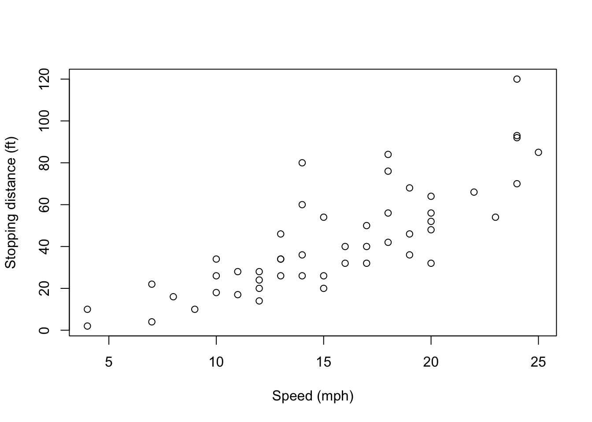
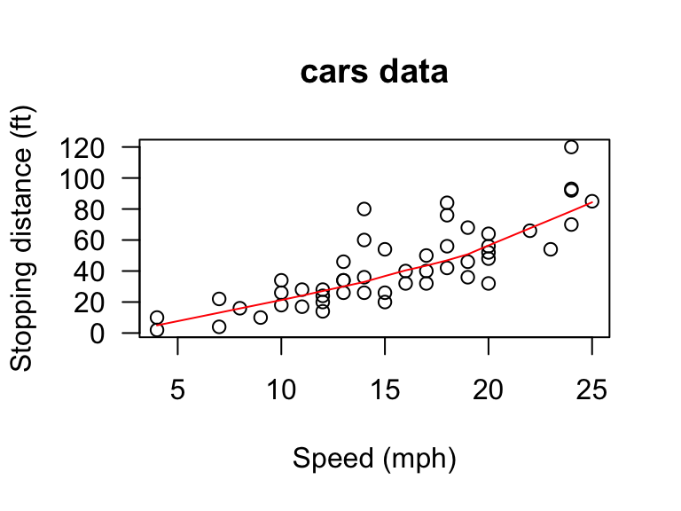
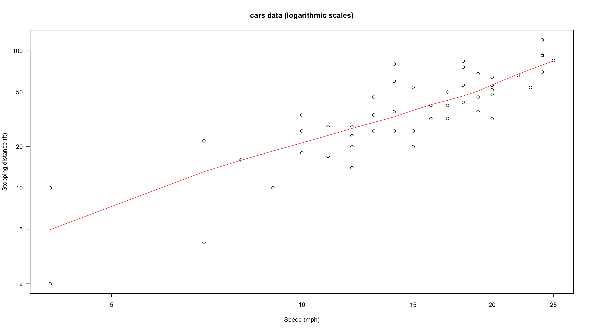

Lab 3 - Short Tutorial of R Markdown
Overview
R Markdown has two advantages that are of interest to a researcher. The first is it allows the results of R code to be directly inserted into formatted documents. The second advantage is it is incredibly easy to use. This ease is a result of R Markdown only using a small set of features and this reduces the complexity of the needed commands. This set of features supports the most commonly used formatting, resulting in the ability to create most documents. These features make R Markdown documents easy to write and the process less error prone.
This guide assumes that you are using R Studio, and the source rmd file lives at lab3.Rmd.
Reproducible research
A minimal standard for data analysis and other scientific computations is the reproducibility. That is, the method, code and data are assembled in a way so that another group can recreate all of the results.
Recommendations for reproducible research
- Encapsulate the full project into one directory that is supported with version control.
- Release your code and data.
- Document everything (method, workflow, when/how you downloaded data, software version, etc).
- Make figures, tables, and statistics the results of scripts.
- Write code that uses relative paths.
- Always set your random seed.
Markup and Markdown
The essential idea in a markup language is that it consists of ordinary text, plus signs which indicate how to change the formatting or meaning of the text. Markdown is a lightweight markup language with plain text formatting syntax. It is intended to be as easy-to-read and easy-to-write as is feasible. Markdown is designed so that it can be converted to HTML and dozens of output formats, like PDFs, Word files, slideshows, and more.
R Markdown
R Markdown is a file format for making dynamic documents with R. An R Markdown document is written in Markdown and contains chunks of embedded R code. R Markdown provides an unified authoring framework for data science, combining your code, its results, and your prose commentary.

Prerequisites
You need knitr and rmarkdown packages, but you don’t need to explicitly install them or load them, as R Studio automatically does both when needed.
Rendering Output
To render an R Markdown document into it’s final output format, click the ``Knit’’ button will render the document and display a preview of it.
Basic Formatting in R Markdown
Prose in .rmd files is written in Markdown, a lightweight set of conventions for formatting plain text files. Markdown is designed to be easy to read and easy to write. It is also very easy to learn. The guide below shows how to use Pandoc’s Markdown, a slightly extended version of Markdown that R Markdown understands.
Text Formatting
------------------------------------------------------------
*italic*
**bold**
~~strikethrough~~
superscript^2^ and subscript~2~
> quotation
`code`
endash: --
emdash: ---
ellipsis: ...
Headings
------------------------------------------------------------
# 1st Level Header
## 2nd Level Header
### 3rd Level Header
Lists
------------------------------------------------------------
* unordered list
* item 2
+ sub-item 1
+ sub-item 2
1. ordered list
2. item 2
1. sub-item 1
2. sub-item 2
The numbers are incremented automatically in the output.
Links and images
------------------------------------------------------------
<http://example.com>
[linked phrase](http://example.com)

Tables
------------------------------------------------------------
First Header | Second Header
------------- | -------------
Content Cell | Content Cell
Content Cell | Content CellParagraph Breaks and Forced Line Breaks
To insert a break between paragraphs, include a single completely blank line.
To force a line break, put two blank spaces at the end of a line.
To insert a break between paragraphs, include a single completely blank line.
To force a line break, put *two* blank
spaces at the end of a line.Including Code
The real point of R Markdown is that it lets you include your code, have the code run automatically when your document is rendered, and seemlessly include the results of that code in your document. The code comes in two varieties, code chunks and inline code.
Code Chunks and Their Results
A code chunk is simply an off-set piece of code by itself. It is preceded by ```{r} on a line by itself, and ended by a line which just says ```. The code itself goes in between. Here, for instance, is some code which loads a data set from a library, and makes a scatter plot.
library(MASS)
data(cars)
plot(cars, xlab = "Speed (mph)", ylab = "Stopping distance (ft)")
First, notice how the code is included, nicely formatted, in the document. Second, notice how the output of the code is also automatically included in the document. If your code outputs numbers or text, those can be included too:
with(cars, cor(speed, dist))## [1] 0.8068949Interactive HTML
R Markdown document can be rendered into the interactive HTML document. You can run the code chunk below by setting eval=TRUE to see the interactive table and plot. To run this chunk, you need to install DT, ggplot2 and plotly packages.
library(ggplot2)
# What does the data look like?
DT::datatable(cars) # Interactive tableplot <- ggplot(cars, aes(x = speed, y = dist)) + geom_point() + #
geom_smooth(method = "lm") + theme_bw() + # add linear model and make black and white
xlab("Speed (mph)") + ylab("Stopping distance (ft)") # Add axis labels
plotly::ggplotly(plot) # Make the plot interactive## We recommend that you use the dev version of ggplot2 with `ggplotly()`
## Install it with: `devtools::install_github('hadley/ggplot2')`Chunk name
Chunks can be given an optional name: ```{r by-name}. You can more easily navigate to specific chunks using the drop-down code navigator in the bottom-left of the script editor. This name is then used for the images (or other files) that are generated when the document is rendered.
Chunk options
Code chunks (but not inline code) can take a lot of options which modify how they are run, and how they appear in the document. These options go after the initial r and before the closing }. You can see the full list at http://yihui.name/knitr/options/.
eval = FALSEprevents code from being evaluated. This is useful for displaying example code, or for disabling a large block of code without commenting each line.include = FALSEruns the code, but doesn’t show the code or results in the final document. Use this for setup code that you don’t want cluttering your report.echo = FALSEprevents code, but not the results from appearing in the finished file. Use this when writing reports aimed at people who don’t want to see the underlying R code.message = FALSEorwarning = FALSEprevents messages or warnings from appearing in the finished file.
Chunk options are seperated by comma. If there is no individual chunk options, the global chunks options will be used.
Inline Code
Code output can also be seamlessly incorporated into the text, using inline code. This is code not set off on a line by itself, but beginning with `r and ending with `. For example, the sample correlation coefficient between speed and dist is 0.8068949.
Changing Image Sizes and Alignments
There are a bunch of options for adjusting the placement of the figures which R produces. fig.align controls the horizontal alignment (left, right, or center). The options fig.height and fig.width let you specify the desired height or width of the figure.
plot(cars, xlab = "Speed (mph)", ylab = "Stopping distance (ft)", las = 1)
lines(lowess(cars$speed, cars$dist, f = 2/3, iter = 3), col = "red")
title(main = "cars data")
plot(cars, xlab = "Speed (mph)", ylab = "Stopping distance (ft)", las = 1, log = "xy")
title(main = "cars data (logarithmic scales)")
lines(lowess(cars$speed, cars$dist, f = 2/3, iter = 3), col = "red")
The figure size can be globally defined in the header of your R Markdown file.
---
output:
fig_height: 9
fig_width: 6
---Tables
The default print-out of matrices, tables, etc. from R Markdown is frankly ugly.
fm1 <- lm(log(dist) ~ log(speed), data = cars)
coef(summary(fm1))## Estimate Std. Error t value Pr(>|t|)
## (Intercept) -0.7296687 0.3758457 -1.941405 5.809204e-02
## log(speed) 1.6023912 0.1395376 11.483579 2.259356e-15kable
If you want to make a somewhat nicer table, the knitr package contains a very basic command, kable, which will format an array or data frame more nicely for display.
knitr::kable(summary(fm1)$coef, digits=4)## Warning in summary(fm1)$coef: partial match of 'coef' to 'coefficients'| Estimate | Std. Error | t value | Pr(>|t|) | |
|---|---|---|---|---|
| (Intercept) | -0.7297 | 0.3758 | -1.9414 | 0.0581 |
| log(speed) | 1.6024 | 0.1395 | 11.4836 | 0.0000 |
pander
Another good option is the pander package. It allows more customization, and if you give it the output of lm(), it will automatically produce the table of regression coefficients that we’re interested in.
pander::panderOptions("digits", 4)
pander::pander(fm1)## Warning in x$coeff: partial match of 'coeff' to 'coefficients'| Estimate | Std. Error | t value | Pr(>|t|) | |
|---|---|---|---|---|
| (Intercept) | -0.7297 | 0.3758 | -1.941 | 0.05809 |
| log(speed) | 1.602 | 0.1395 | 11.48 | 2.259e-15 |
Caching
If document rendering becomes time consuming due to long computations or plots that are expensive to generate, you can ask R Markdown to keep track of whether a chunk of code has changed, and only re-run it if it has. This is called caching the chunk. Let’s see the effect of caching by executing an inline function. The Fibonacci numbers (\(F_n\)) are defined by \(F_0 = 0\), \(F_1 = 1\), and \(F_n = F_{n-1} + F_{n-2}\) for \(n \ge 1\).
R_fibonacci = function(x){
if (x == 0 || x == 1) return(x);
return (R_fibonacci(x-1) + R_fibonacci(x-2))}The below code will take several seconds to compute at the first run. On the second run, knitr will use the cached output without evaluating the code (unless you change it!)
R_fibonacci(30)## [1] 832040However, be careful with caching. One issue is that a chunk of code which hasn’t changed itself might call on results of earlier, modified chunks, and then we would want to re-run the downstream chunks. There are options for manually telling R Markdown “this chunk depends on this earlier chunk”, but it’s generally easier to let it take care of that, by setting the autodep=TRUE option.
- If you load a package with the
library()orrequire()commands, R Markdown isn’t smart enough to check whether the package has changed (or indeed been installed, if you were missing it). So that won’t trigger an automatic re-running of a cached code chunk. - To manually force re-running all code chunks, the easiest thing to do is to delete the directory R Markdown will create (named something like filename
_cache) which it uses to store the state of all code chunks.
Rcpp Code Chunks
This section is optional. Those who have a C compiler installed can turn on the evaluation of three chunks below. If you don’t have the C compiler, please ignore this section. Sometimes R code just isn’t fast enough. You’ve used profiling to figure out where your bottlenecks are, and you’ve done everything you can in R, but your code still isn’t fast enough. You may want to consider the Rcpp package to accelerate computations, which permit to rewrite functions in C++.
#include <Rcpp.h>
// [[Rcpp::export]]
int Rcpp_fibonacci(const int x) {
if (x == 0 || x == 1) return(x);
return (Rcpp_fibonacci(x - 1)) + Rcpp_fibonacci(x - 2);
}Rcpp_fibonacci(30L)The improved performance by using the Rcpp function over the naive R function can be seen by benchmarking these two functions. To understand performance, you can also profile execution of two functions using Rprof or profvis.
library(microbenchmark)
op <- microbenchmark(R_fibonacci(10),Rcpp_fibonacci(10L),times=10L)
pander::pander(op)If you want use an Rcpp function in R console, you must compile it or install it using a local R package. For more details, please see http://www.rcpp.org.
Setting Defaults for All Chunks
You can tell R to set some defaults to apply to all chunks where you don’t specifically over-ride them. Here are the ones I generally use:
# Need the knitr package to set chunk options
library(knitr)
# Set knitr options for knitting code into the report:
# Don't print out code (echo)
# Save results so that code blocks aren't re-run unless code changes (cache),
# or a relevant earlier code block changed (autodep), but don't re-run if the
# only thing that changed was the comments (cache.comments)
# Don't clutter R output with messages or warnings (message, warning)
# This will leave error messages showing up in the knitted report
opts_chunk$set(echo=TRUE,
cache=FALSE, autodep=TRUE, cache.comments=FALSE,
message=FALSE, warning=FALSE)This sets some additional options beyond the ones I’ve discussed, like not re-running a chunk if only the comments have changed (cache.comments = FALSE), and leaving out messages and warnings. I would typically give this set-up chunk itself the option include=FALSE.
Individual chunk options will overide the global chuck options.
Tangle
You can extract the source code chunk out of the R Markdown document. This procedure is called “tangling”, which can be done by using knit() function with tangle=TRUE option in the R console. Then, you can execute the “tangled” code by source() to get the results without rendering the R Markdown document.
knitr::knit("yourdocument.rmd", tangle=TRUE)
source("yourdocument.R")Math in R Markdown
With R Markdown, you can embed math equations directly into your document. R Markdown gives you the syntax to render complex mathematical formulas and derivations, and have them displayed very nicely. Like code, the math can either be inline or set off (displays).
Inline math is marked off witha pair of dollar signs ($), as \(\pi r^2\) or \(e^{i\pi}\).
Inline math is marked off witha pair of dollar
signs (`$`), as $\pi r^2$ or $e^{i\pi}$.Mathematical displays are marked off with \[ and \], as in \[
e^{i \pi} = -1
\]
Mathematical displays are marked off with `\[` and `\]`, as in
\[
e^{i \pi} = -1
\]Prerequisites
If your output format is html, equations are displayed using the MathJax JavaScript library. Note that this library is loaded from the MathJax website so readers of your document must be online to see the rendered equations. On the other hand, if your output format is pdf, then you need to install a program called LaTeX. I recommend to install TeX Live for Linux or Window machines and MacTeX for OS X.
Elements of Math Mode
- Most letters will be rendered in italics (compare: a vs.
avs. \(a\); only the last is in math mode). The spacing between letters also follows the conventions for math, so don’t treat it as just another way of getting italics. (Compare speed, in simple italics, with \(speed\), in math mode.) - Greek letters can be accessed with the slash in front of their names, as
\alphafor \(\alpha\). Making the first letter upper case gives the upper-case letter, as in\Gammafor \(\Gamma\) vs.\gammafor \(\gamma\). (Upper-case alpha and beta are the same as Roman A and B, so no special commands for them.) - There are other “slashed” (or “escaped”) commands for other mathematical symbols:
\timesfor \(\times\)\cdotfor \(\cdot\)\leqand\geqfor \(\leq\) and \(\geq\)\subsetand\subseteqfor \(\subset\) and \(\subseteq\)\leftarrow,\rightarrow,\Leftarrow,\Rightarrowfor \(\leftarrow\), \(\rightarrow\), \(\Leftarrow\), \(\Rightarrow\)\approx,\sim,\equivfor \(\approx\), \(\sim\), \(\equiv\)- See, e.g., http://web.ift.uib.no/Teori/KURS/WRK/TeX/symALL.html for a fuller listing of available symbols. (http://tug.ctan.org/info/symbols/comprehensive/symbols-a4.pdf lists all symbols available in
LaTeX, including many non-mathematical special chracters)
- Subscripts go after an underscore character,
_, and superscripts go after a caret,^, as\beta_1for \(\beta_1\) ora^2for \(a^2\). - Curly braces are used to create groupings that should be kept together, e.g.,
a_{ij}for \(a_{ij}\) (vs.a_ijfor \(a_ij\)). - If you need something set in ordinary (Roman) type within math mode, use
\mathrm, ast_{\mathrm{in}}^2for \(t_{\mathrm{in}}^2\). - If you’d like something set in an outline font (“blackboard bold”), use
\mathbb, as\mathbb{R}for \(\mathbb{R}\). For bold face, use
\mathbf, as
for \[ (\mathbf{x}^T\mathbf{x})^{-1}\mathbf{x}^T\mathbf{y} \](\mathbf{x}^T\mathbf{x})^{-1}\mathbf{x}^T\mathbf{y}- Accents on characters work rather like changes of font:
\vec{a}produces \(\vec{a}\),\hat{a}produces \(\hat{a}\). Some accents, particularly hats, work better if they space out, as with\widehat{\mathrm{Var}}producing \(\widehat{\mathrm{Var}}\). - Function names are typically written in romans, and spaced differently: thus \(\log{x}\), not \(log x\).
LaTeX, and thereforeR Markdown, knows about a lot of such functions, and their names all begin with\. For instance:\log,\sin,\cos,\exp,\min, etc. Follow these function names with the argument in curly braces; this helpsLaTeXfigure out what exactly the argument is, and keep it grouped together with the function name when it’s laying out the text. Thus\log{(x+1)}is better than\log (x+1). Fractions can be created with
\frac, like so:
produces \[ \frac{a+b}{b} = 1 + \frac{a}{b} \]\frac{a+b}{b} = 1 + \frac{a}{b}Sums can be written like so:
will produce \[ \sum_{i=1}^{n}{x_i^2} \] The lower and upper limits of summation after the\sum_{i=1}^{n}{x_i^2}\sumare both optional. Products and integrals work similarly, only with\prodand\int: \[ n! = \prod_{i=1}^{n}{i} \] \[ \log{b} - \log{a} = \int_{x=a}^{x=b}{\frac{1}{x} dx} \]\sum,\prodand\intall automatically adjust to the size of the expression being summed, producted or integrated.“Delimiters”, like parentheses or braces, can automatically re-size to match what they’re surrounding. To do this, you need to use
\leftand\right, as
renders as \[ \left( \sum_{i=1}^{n}{i} \right)^2 = \left( \frac{n(n-1)}{2}\right)^2 = \frac{n^2(n-1)^2}{4} \]\left( \sum_{i=1}^{n}{i} \right)^2 = \left( \frac{n(n-1)}{2}\right)^2 = \frac{n^2(n-1)^2}{4}- To use curly braces as delimiters, precede them with slashes, as
\{and\}for \(\{\) and \(\}\). A set of multiple aligned equations can be created using
align*, as follows.\begin{align*} X & \sim \mathrm{N}(0,1)\\ Y & \sim \chi^2(n-p) \end{align*}
Notice that & is a delimiter separating columns, and each line (except the last) is terminated with \\. The left or right hand side of the equation can be blank, and space will be made:
\begin{align*}
P(|X-\mu| > k) & = P(|X-\mu|^2 > k^2)\\
& \leq \frac{\mathbb{E}\left[|X-\mu|^2\right]}{k^2}\\
& \leq \frac{\mathrm{Var}[X]}{k^2}
\end{align*}A matrix can be represented using pmatrix in a similar fashion. matrix or bmatrix gives a matrix with a different surrounding.
\[
\begin{pmatrix}
1 & 0 & 0 \\
0 & 1 & 0 \\
0 & 0 & 1
\end{pmatrix}
\]\[ \begin{pmatrix} 1 & 0 & 0 \\ 0 & 1 & 0 \\ 0 & 0 & 1 \end{pmatrix} \]
Troubleshooting
- “It worked in the console but it wouldn’t knit”: You have almost certainly done something somewhat different before the code chunk that’s giving you trouble. Clear your workspace in the console using
rm(list=ls())and re-run.- If you are using
cache = TRUE, delete a directory (filename_cache) of cached results. - R Studio keeps two environments or workspaces which it uses to evaluate R expressions, look up function or variable names, etc. One is the “usual” global environment of the console, which builds cumulatively from the start of your session. (Unless you deliberately manipulate it; don’t do that unless you know what you’re doing.) Every time you knit, however, it re-runs your code in clean workspace, as though you had just started R from scratch. This means knitted code does what you say it should, and only that. If your code knits, it should work on any computer; getting something to run in the console which you can’t reproduce is just dumb luck.
- If you are using
- “It works when I source it, but it won’t knit”: This is basically the same problem as “it worked in the console”.
- Avoid
attachin both the console and in your file; using it is a recipe for creating hard-to-find errors. You can still shorten expressions usingwithinstead. - When you need to load data files or source someone else’s code, use full URLs, rather than creating local copies and loading them from your disk.